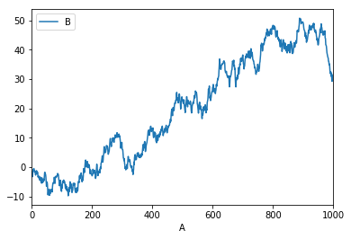
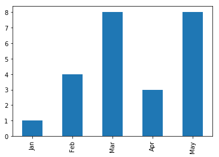
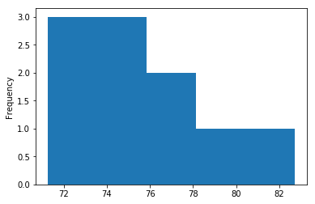
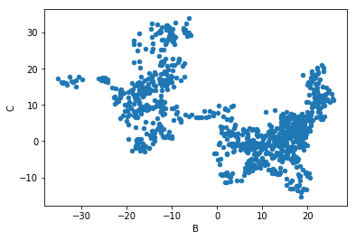
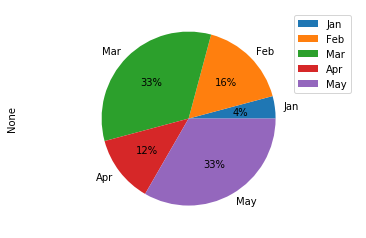

数据分析DAY06
pandas可视化
基本绘图
Series数据可视化
Series提供了plot方法以index作为x，以value作为y，完成数据可视化：
xxxxxxxxxxts = pd.Series(np.random.randn(1000), index=pd.date_range('1/1/2000', periods=1000))ts = ts.cumsum()ts.plot()
DataFrame数据可视化
DataFrame提供了plot方法可以指定某一列作为x，某一列作为y，完成数据可视化：
xxxxxxxxxxdf3 = pd.DataFrame(np.random.randn(1000, 2), columns=['B', 'C']).cumsum()df3['A'] = np.arange(len(df3))df3.plot(x='A', y='B')
高级绘图
plot()方法可以通过kind关键字参数提供不同的图像类型，包括：
| 类型 | 说明 |
|---|---|
bar or barh | 柱状图 |
hist | 直方图 |
box | 箱线图 |
scatter | 散点图 |
pie | 饼状图 |
相关API如下：
柱状图
xxxxxxxxxx# 柱状图series.plot.bar()dataFrame.plot.bar()dataFrame.plot.barh()
直方图
xxxxxxxxxx# 直方图series.plot.hist(alpha=0.5, bins=5)dataFrame.plot.hist(alpha=0.5, bins=5)
散点图
xxxxxxxxxx# 散点图df.plot.scatter(x='a', y='b', c=col, colormap='');
饼状图
xxxxxxxxxx# 饼状图series.plot.pie(figsize=(6, 6))dataFrame.plot.pie(subplots=True, figsize=(6, 6), layout=(2, 2))
箱线图

xxxxxxxxxx# 箱线图# 先找出一组数据的上边缘、下边缘、中位数和两个四分位数；然后， 连接两个四分位数画出箱体；再将上边缘和下边缘与箱体相连接，中位数在箱体中间df.plot.box()# 分组箱线图df.boxplot(by='X')箱线图反应一组数据的集中趋势，四分位数的差可以反映一组数据的离散情况：
- 中位数高，表示平均水平较高；反之则表示平均水平较低。
- 箱子短，表示数据集中；箱子长，表示数据分散。
项目：分析影响学生成绩的因素
xxxxxxxxxx.........
项目：泰坦尼克号生存人员数据分析与可视化
xxxxxxxxxx.........项目：movielens电影数据分析与可视化
xxxxxxxxxx.........项目：二手房源信息数据分析与可视化
xxxxxxxxxx.........扩展：数据清洗
检测与处理重复值
pandas提供了一个名为drop_duplicates的去重方法。该方法只对DataFrame或者Series类型有效。这种方法不会改变数据原始排列，并且兼具代码简洁和运行稳定的特点。该方法不仅支持单一特征的数据去重，还能够依据DataFrame的其中一个或者几个特征进行去重操作。
xxxxxxxxxxdataFrame(Series).drop_duplicates( self, subset=None, keep='first', inplace=False)| 参数名 | 说明 |
|---|---|
| subset | 接收string或sequence。表示进行去重的列。默认为None，表示全部列。 |
| keep | 接收特定string。表示重复时保留第几个数据。first：保留第一个。last：保留最后一个。false：只要有重复都不保留。默认为first。 |
| inplace | 接收boolean。表示是否在原表上进行操作。默认为False。 |
示例：
xxxxxxxxxximport pandas as pddata=pd.DataFrame({'A':[1,1,2,2],'B':['a','b','a','b']})datadata.drop_duplicates('A', 'first', inplace=True)data
检测与处理缺失值
数据中的某个或某些特征的值是不完整的，这些值称为缺失值。 pandas提供了识别缺失值的方法isnull以及识别非缺失值的方法notnull，这两种方法在使用时返回的都是布尔值True和False。 结合sum函数和isnull、notnull函数，可以检测数据中缺失值的分布以及数据中一共含有多少缺失值。isnull和notnull之间结果正好相反，因此使用其中任意一个都可以判断出数据中缺失值的位置。
1）删除法
删除法分为删除观测记录和删除特征两种，pandas中提供了简便的删除缺失值的方法dropna，该方法既可以删除观测记录，亦可以删除特征。
xxxxxxxxxxpandas.DataFrame.dropna( self, axis=0, how='any', thresh=None, subset=None, inplace=False)| 参数名 | 说明 |
|---|---|
| axis | 接收0或1。表示轴向，0为删除记录（行），1为删除特征（列）。默认为0。 |
| how | 接收特定string。表示删除的形式。any表示只要有缺失值存在就执行删除操作。all表示当且仅当全部为缺失值时执行删除操作。默认为any。 |
| subset | 接收类array数据。表示进行去重的列∕行。默认为None，表示所有列/行。 |
| inplace | 接收boolean。表示是否在原表上进行操作。默认为False。 |
示例：
xxxxxxxxxxdates = pd.date_range('20130101', periods=6)df = pd.DataFrame(np.arange(24).reshape((6,4)),index=dates, columns=['A','B','C','D'])df.iloc[0,1] = np.nandf.iloc[1,2] = np.nan# df1接收，判断是否有缺失数据 NaN, 为 True 表示缺失数据:df1=df.isnull()df1#每一列的缺失数据df2=df.isnull().sum()df2#整个表的缺失数据df2.sum()# df1接收，去掉有 NaN 的行, 可以使用 dropna 一旦出现NaN就去除整行df3=df.dropna(axis=0,how='any')df32）替换法
替换法是指用一个特定的值替换缺失值。 特征可分为离散型和连续型，两者出现缺失值时的处理方法也是不同的。 缺失值所在特征为连续型时，通常利用其均值、中位数和众数等描述其集中趋势的统计量来代替缺失值。缺失值所在特征为离散型时，则经常选择使用众数来替换缺失值。
| 插补方法 | 方法描述 |
|---|---|
| 均值/中位数/众数插补 | 根据属性值的类型用该属性取值的平均数/中位数/众数进行插补 |
| 使用固定值 | 将缺失的属性值用一个常量替换。 |
| 最近临插补 | 在记录中找到与缺失样本最接近的样本的该属性值插补 |
| 回归方法 | 对带有缺失值的变量,根据已有数据和与其有关的其他变量(因变量)的数据建立拟合模型来预测缺失的属性值 |
| 插值法 | 插值法是利用已知点建立合适的插值函数f(x),未知值由对应点x求出的函数值f(x)近似代替 |
pandas库中提供了缺失值替换的方法名为fillna，其基本语法如下：
xxxxxxxxxxpandas.DataFrame.fillna( value=None, method=None, axis=None, inplace=False, limit=None)常用参数及其说明如下：
| 参数名 | 说明 |
|---|---|
| value | 接收scalar，dict，Series或者DataFrame。表示用来替换缺失值的值。无默认。 |
| method | 接收特定string。backfill或bfill表示使用下一个非缺失值填补缺失值。pad或ffill表示使用上一个非缺失值填补缺失值。默认为None。 |
| axis | 接收0或1。表示轴向。默认为1。 |
| inplace | 接收boolean。表示是否在原表上进行操作。默认为False。 |
| limit | 接收int。表示填补缺失值个数上限，超过则不进行填补。默认为None。 |
案例：
xxxxxxxxxx# df2接收，如果是将 NaN 的值用其他值代替, 比如代替成 0:dates = pd.date_range('20130101', periods=6)df = pd.DataFrame(np.arange(24).reshape((6,4)),index=dates, columns=['A','B','C','D'])df.iloc[0,1] = np.nandf.iloc[1,2] = np.nan# 固定值填补df2=df.fillna(value=0)df2# 相似值填补df3=df.fillna(method='pad', axis=1)df33）插值法 删除法简单易行，但是会引起数据结构变动，样本减少；替换法使用难度较低，但是会影响数据的标准差，导致信息量变动。在面对数据缺失问题时，除了这两种方法之外，还有一种常用的方法—插值法。
scipy提供了插值算法可以通过一组散点得到一个符合一定规律插值器函数。这样当我们给插值器函数更多未知x，插值函数将会返回相应的y用于填补缺失值。
需求：统计各小区彩民买彩票的情况：
| 彩民数量 | 彩票购买量 |
|---|---|
| 30 | 100注 |
| 40 | 120注 |
| 50 | 135注 |
| 60 | 155注 |
| 45 | - |
| 65 | 170注 |
scipy提供的插值方法如下：
xxxxxxxxxximport scipy.interpolate as sifunc = si.interp1d( 离散水平坐标, 离散垂直坐标, kind=插值算法(缺省为线性插值))案例：
xxxxxxxxxx"""demo07_inter.py 插值器"""import numpy as npimport matplotlib.pyplot as mpimport scipy.interpolate as six = [30, 40, 50, 60, 65]y = [100, 120, 135, 155, 170]mp.scatter(x, y)xs = np.linspace(min(x), max(x), 200)# 通过这些散点，构建一个线性插值函数linear = si.interp1d(x, y, kind='cubic')print(linear(45))ys = linear(xs)mp.plot(xs, ys)mp.show()
检测与处理异常值
简单统计量分析 先对变量做一个描述性统计，找出哪些数据是不合理的，最常用的统计量是求最大值和最小值，判断变量是否在这个区间。
3σ原则 3σ原则又称为拉依达法则。该法则就是先假设一组检测数据只含有随机误差，对原始数据进行计算处理得到标准差，然后按一定的概率确定一个区间，认为误差超过这个区间的就属于异常值。 这种判别处理方法仅适用于对正态或近似正态分布的样本数据进行处理。如果不符合正态分布，可以用远离平均值的多少倍标准差来表示。
箱线图分析
箱线图提供了识别异常值的一个标准，即异常值通常被定义为小于QL-1.5IQR或大于QU+1.5IQR的值。 QL称为下四分位数，表示全部观察值中有四分之一的数据取值比它小。 QU称为上四分位数，表示全部观察值中有四分之一的数据取值比它大。 IQR称为四分位数间距，是上四分位数QU与下四分位数QL之差，其间包含了全部观察值的一半。
异常值的处理方法：
| 异常值处理方法 | 方法描述 |
|---|---|
| 删除含有异常值的记录 | 直接删除含有异常值的记录 |
| 视为缺失值 | 将异常值视为缺失值，按照缺失值方法处理。 |
| 平均值修正 | 用前后两个观测值的均值进行修正。 |
| 不处理 | 直接在含有异常值的数据集上进行数据建模。 |